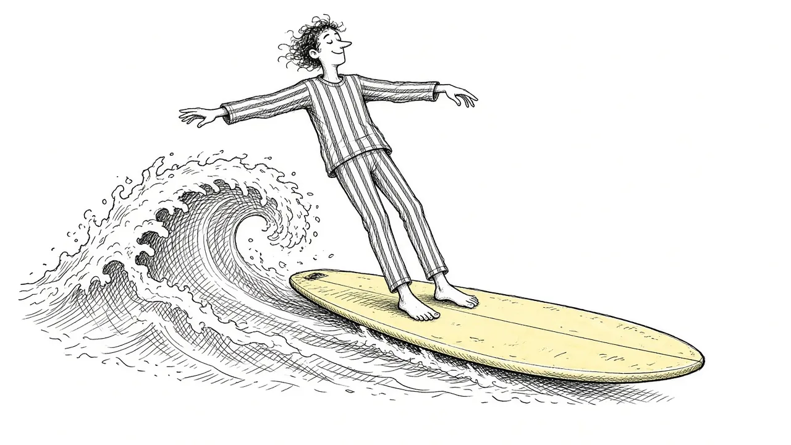

Grief Waves: Why It Comes Back and How to Ride It Out

You are having a decent day. Maybe even a good one. Then a song comes on in the grocery store, or you smell their shampoo on a stranger, or you reach for your phone to tell them something. Suddenly the grief hits as hard as it did in the first week. You have to sit down. You cannot breathe.
These are grief waves, and almost everyone who grieves experiences them. They can feel like proof that you are not making progress. They are not. This guide explains why grief comes in waves, what tends to trigger them, and how to ride them out.
What a grief wave is
A grief wave is a sudden surge of grief that rises, peaks, and eventually passes. Waves can last a few minutes or a few hours. They might bring tears, a tight chest, panic, numbness, or a rush of longing.
In early grief, waves can come constantly, sometimes overlapping so closely that it feels like one long storm. Over time, many people find the waves come less often and pass more quickly. But they rarely stop entirely. Even years later, a wave can arrive without warning.
A wave does not mean you are back at the beginning. It means you are still grieving someone who mattered.
Why grief comes in waves
Your brain is still updating
Your brain built a detailed map of the world with this person in it. Every reminder that they are gone is a moment of updating that map, and each update can hurt. Waves often come when your brain encounters something it still associates with them.
Grief cannot be felt all at once
The full weight of a loss is too much to take in at one time. The mind seems to process grief in doses, letting some in, then pulling back. Waves may be part of that natural pacing.
Life keeps presenting reminders
Holidays, birthdays, seasons, songs, places, and smells all hold memories. As you move through life, you keep encountering them.
Common triggers
Waves can come from anywhere, but some triggers are especially common:
- Anniversaries. Birthdays, holidays, and the date of the death.
- Sensory reminders. Smells, songs, voices, foods.
- Places. Their favorite restaurant, the hospital, the street where they lived.
- Milestones. Weddings, graduations, births, and other events they are not there for.
- Ordinary moments. Reaching for two plates, wanting to call them with news.
- Seeing others. A parent with a child, an older couple holding hands.
- Exhaustion or stress. When you are depleted, waves may come more easily.
Some waves seem to have no trigger at all. That is normal too.
How to ride a grief wave
You cannot stop a wave from coming, but you can learn to move with it rather than fighting it.
1. Recognize it
Naming what is happening can help. "This is a grief wave. It will pass." That simple recognition can lower panic.
2. Let it come
Resisting a wave tends to make it last longer. If you can, let yourself feel it: cry, sit down, breathe. You do not have to hold it back.
3. Anchor yourself
Feel your feet on the ground. Notice five things you can see. Hold something warm. Grounding can help your nervous system steady itself while the wave passes.
4. Breathe slowly
Long, slow exhales can calm the body's stress response. Try breathing in for four counts and out for six.
5. Reach out if you can
Text a friend: "Having a hard grief moment." You do not need them to fix it. Just knowing someone knows can help.
6. Be gentle afterward
Waves can leave you tired. After one passes, give yourself something kind: a drink of water, a few quiet minutes, a walk.
Preparing for predictable waves
Some waves can be anticipated. You know their birthday is coming. You know the holidays will be hard. Planning ahead can help.
- Decide how you want to spend the day. Alone, with people, at a meaningful place.
- Create a ritual. Light a candle, cook their recipe, write them a letter. See Grief Rituals.
- Tell people. Let friends know the day is coming so they can check in.
- Have an exit plan. If you go to an event, know you can leave early.
- Lower expectations. It is okay if the day is mostly about getting through.
When waves happen in public
Grief waves at work, at school, or in public places can feel embarrassing. A few strategies:
- Step outside or into a restroom for a few minutes
- Keep tissues or a small comforting object with you
- Have a short phrase ready, like "I am having a grief moment, I will be right back"
- Remember that most people have grieved and will understand
There is no shame in being moved by love in public.
How waves change over time
Many people notice that over months and years:
- Waves come less frequently
- Waves pass more quickly
- Waves bring warmth along with pain
- You feel more confident that you can survive them
This change is not linear. You might have a stretch of calm and then a wave as strong as the early days. That does not erase your progress. See Why Your Grief Keeps Changing Shape.
When waves feel overwhelming
Sometimes waves are so frequent or intense that it becomes hard to function. If grief waves are keeping you from working, sleeping, or caring for yourself for a long time, it may help to talk with a counselor. Our guide When Grief Feels Overwhelming offers more practical tools.
If a wave brings thoughts of ending your life, please reach out right away. Call or text 988 to reach the Suicide and Crisis Lifeline. Someone is there any time of day or night.
Waves and the people around you
People who have not grieved deeply may be confused when a wave hits months after a loss. They may wonder why you are upset "out of nowhere." It can help to explain, simply, that grief comes in waves and that a hard moment does not mean you are falling apart. Many people are relieved to understand, and some will start checking in more on the days they know are hard.
Living with the tide
Grief waves are not a sign that you are failing to heal. They are part of how grief works. Each wave is a moment of love meeting absence. With time, practice, and support, most people find that they can ride the waves more steadily, and that the calm stretches between them grow longer. You do not have to stop the tide. You just have to learn, slowly, how to swim.
This article is for general information and support. It is not medical or mental health advice. If grief has become unbearable or you are thinking about harming yourself, call or text 988 right now.
Related reading

Grief Alongside Depression and Anxiety
Grief often arrives alongside other mental health challenges. How to recognize overlap and get support for all of it.

Why Your Brain Keeps Replaying Their Last Days
Memories of the final days or moments can loop relentlessly. Here is why that happens and how to let the rest of their life back in.

Rumination in Grief: Getting Off the "What If" Wheel
Endless what-ifs and if-onlys can trap grieving people. Learn why rumination happens and gentle ways to step off the wheel.